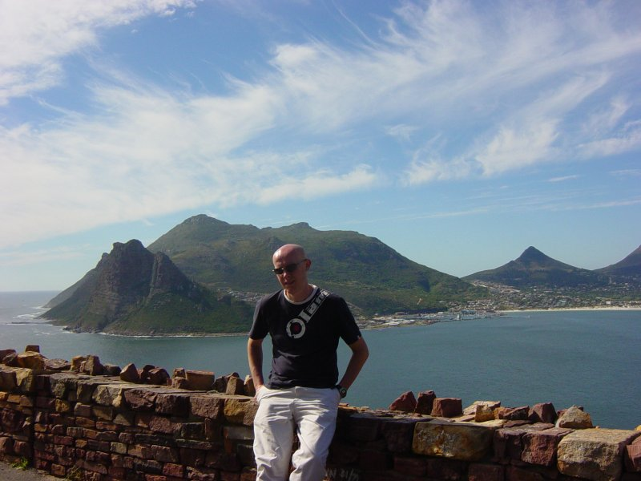

Breakfast approx 7:00am.
Drove to Simons Town via M3 and Fish Hoek. Arrived approx 8:30am at Boulders beach to see the penguins.
Beach was quiet at this time. Had a swim in the sea with the penguins, sea was probably 14C so pretty refreshing.
Left at about 10:00 by which time it was pretty busy.
Drove to Cape Point National Park, stopped at Rooikrans view point where we spotted a killer whale and a southern right whale (with aid of binoculars). Also saw some lizards and a dassie (small furry creature, whose nearest relative is the elephant).
Drove on to the Cape Point, got the funicular to the top to appreciate the views and then walked back down.
Drove to the Cape of Good Hope, the most south westerly point of Africa. On way back took the circular drive and then took the left turn before M65 which is a long road and turned out to be a dead end so drove back, saw a turtle crossing the road on the way back which kind of made it worth it. Then took the M65 stopping at various viewpoints including Chapmans point and chapmans peak in Hout Bay.

Continued on the M6 along the Atlantic Ocean past Camps bay and Clifton beach to our hotel.
Had a beer at hotel and then took a taxi to Long Street where we took a walk to decide where to eat.
Approached by self employed tourist helper, tipped 10R!
Had a beer in a bar on long street and then ate at Five Flies. We both had the mussels for starter. I had springbok again for main and yamini had sole.
I had malva pudding for dessert (again) and yamini had a chocolate pudding. Had a bottle of Klein Constantia Chardonnay 2005 which was not particularly notable.
{kind=link}